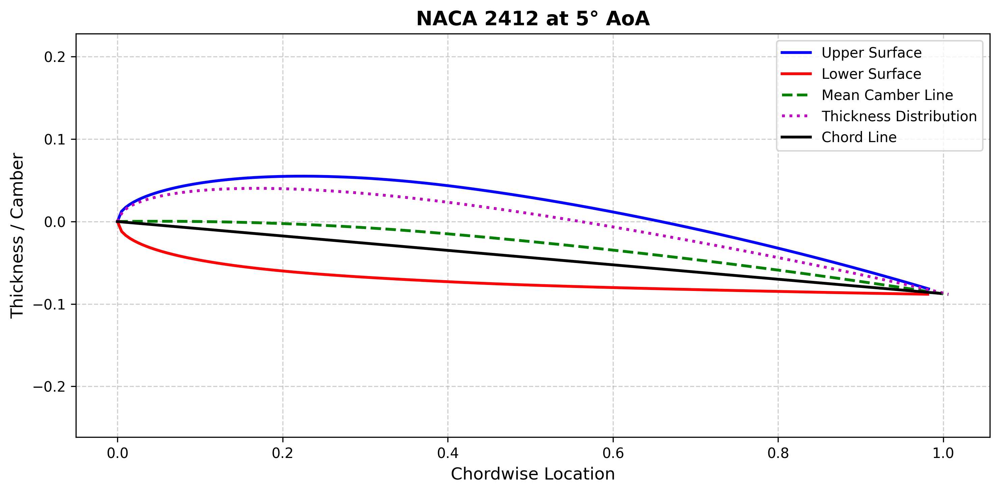

OpenFOAM Airfoil Simulator¶
This repository is dedicated to performing 2D airfoil simulations using OpenFOAM (currently OpenFOAM v2406) and post-processing the results. There are multiple functions to generate, load, and export airfoils, create meshes, prepare boundary conditions, and set up the complete case structure. Predefined environments and scripts allow you to launch full analyses for several variants with post-processing and comparisons. The documentation and provided examples should help getting familiar with the subject of airfoil CFD simulations. Although some functionalities are tested and compared to outer reference it is not recommended to treat them as benchmarks due to several simplifications and eventual inaccuracies.
Getting Started¶
To avoid setup difficulties and ensure repeatability of the analyses, this repository provides predefined environments with only a few prerequisites. The Python environment is defined using Poetry, while for OpenFOAM a Docker image has been created.
The only strict requirement is Docker, which can be downloaded and installed from the official page. Once the installation and configuration process is finished, the image may be built. The commands below are shown for PowerShell on Windows, but are directly transferable to Linux and macOS terminals.
While inside the repository, launch Docker Desktop and execute the following command in the terminal:
This builds the image specified inside the Dockerfile. The image is based on Ubuntu 22.04 and includes all system dependencies, Python 3.11 with Poetry, and OpenFOAM v2406 with cfMesh. The --progress=plain parameter is optional and provides additional logs to track potential build errors. All scripts inside the repository may be executed and used within it. Usually it is useful to launch it with an attached local directory where the OpenFOAM cases and JSON files with simulation settings will be located. This allows access to the files from the file explorer directly. This can be done with the following command:
Now the repository and the case directory may be found under the /app path. For example, the main case running script will be under the path: /app/src/simulation/run/run_case.sh. You may launch it using one of the example inputs with the following commands:
cd /app/src/simulation/run/
bash ./run_case.sh --working-dir /app/case_dir --setup-file /app/examples/naca4415_study/aoa_5.json --case-name aoa_5
This example launches a full workflow for a generated NACA4415 airfoil with an angle of attack of 5° and Reynolds number of 1,000,000 set in the boundary conditions.
The scripts are prepared to utilize Python scripts via the Poetry environment and it can also be used manually inside the container, but sometimes it is useful to set it up locally. A concise installation guide is available in its documentation. One of the key project files for Poetry is pyproject.toml in the repository root. It defines required libraries and their versions. To ensure compatibility and proper operation, versions are pinned.
To build the environment, execute:
Now it may be used through the code editor for notebooks and scripts or through the terminal:
poetry run python src/simulation/preparation/prepare_case.py --working-dir . --setup-file examples/naca4415_study/aoa_5.json --case-name case_name
Lastly, you may desire to visualize the simulation results or any partial files. For this purpose it is useful to have ParaView installed. It is an open-source tool recommended for post-processing and visualization of OpenFOAM results. It may be downloaded from the official site.
Airfoil¶
In general, an airfoil is an aerodynamic shape specially designed to generate lift (due to pressure difference on its lower and upper surfaces) and minimum drag while moving through the air. They can be found in wings or propellers as their cross-sections.
Airfoil Terminology¶
There is a set of common parameters that are used to describe and understand the geometry and aerodynamic behavior of most airfoils. The most important terms are listed below:
- Leading edge – the foremost point of the airfoil that encounters the incoming flow.
- Trailing edge – the rearmost point of the airfoil where the upper and lower surfaces meet and the flow leaves the airfoil.
- Chord – a straight line joining the leading edge and trailing edge of the airfoil. The chord length is one of the most important geometric parameters, commonly used as a reference dimension in aerodynamic equations.
- Camber – a curve equivalent to the geometrical centerline, located midway between the upper and lower surfaces, describing the airfoil's curvature.
- Thickness – the distance between the upper and lower surfaces. Thickness is most commonly measured perpendicular to the camber line, though it may also be defined perpendicular to the chord line. The maximum thickness is a frequently used geometric parameter.
- Upper and lower surfaces – create the airfoil's outer geometry connecting the leading and trailing edges. Typically the upper surface encounters lower static pressure than the lower, and sometimes they are referred to as suction and pressure surfaces. The pressure difference between them generates lift.
- Aerodynamic center – a point along the chord where the pitching moment stays unchanged regardless of the change in angle of attack and fluid speed.
- Center of pressure – a point where the average pressure force is considered to act. Its location varies with changing conditions.
- Angle of attack – the angle between the relative wind vector and the chord line.
- Lift – the component of the aerodynamic force acting perpendicular to the incoming flow direction.
- Drag – the component of the aerodynamic force acting parallel to the incoming flow direction.

NACA Airfoils¶
The National Advisory Committee for Aeronautics (NACA) developed and tested a series of airfoils in the first half of the 20th century. They were designed to provide systematic, well-defined geometries that could be easily reproduced, analyzed, and compared in experiments and calculations. Their most important feature is the description of key geometrical parameters through mathematical equations. Main parameters may be determined through the designations. Although there are modern, more capable airfoils developed, the NACA-series are widely used for education, aerodynamic studies, numerical simulations, validations, and experiments. There are two main groups of NACA airfoils.
NACA 4-digit series¶
The simplest series where the geometry is described by three parameters through four digits in the form:
NACA MPXX
where:
- M is the maximum camber as a percentage of the chord.
- P is the position of maximum camber in tenths of the chord.
- XX is the maximum thickness as a percentage of the chord.
For example, NACA 4415 (4-4-15) has a maximum camber of 4% of the chord, located at 40% of the chord line from the leading edge and a maximum thickness of 15% of the chord. Another good example is the NACA 0012 (0-0-12) which has zero camber (which means the airfoil is symmetric and does not produce lift at 0° angle of attack) and a maximum thickness of 12% of the chord. The following equations allow calculation of the airfoil's geometry:
Normalized parameters¶
Using a normalized chordwise coordinate (x \in [0,1]):
[ m = \frac{M}{100}, \quad p = \frac{P}{10}, \quad t = \frac{XX}{100} ]
Mean camber line¶
[ y_c(x) = \begin{cases} \frac{m}{p^2}(2px - x^2), & x \le p \ \frac{m}{(1-p)^2}\left[(1 - 2p) + 2px - x^2\right], & x > p \end{cases} ]
Thickness distribution¶
[ y_t(x) = 5t\left( 0.2969\sqrt{x} - 0.1260x - 0.3516x^2 + 0.2843x^3 - 0.1036x^4 \right) ]
The coefficient (-0.1036) corresponds to a closed trailing edge.
For a finite trailing-edge thickness, it may be replaced with (-0.1015).
Surface inclination¶
[ \theta(x) = \arctan\left(\frac{dy_c}{dx}\right) ]
[ \frac{dy_c}{dx} = \begin{cases} \frac{2m}{p^2}(p - x), & x \le p \ \frac{2m}{(1-p)^2}(p - x), & x > p \end{cases} ]
Upper and lower surface coordinates¶
[ x_u = x - y_t \sin\theta, \quad y_u = y_c + y_t \cos\theta ]
[ x_l = x + y_t \sin\theta, \quad y_l = y_c - y_t \cos\theta ]
NACA 5-digit series¶
Slightly more complex in geometry and description than the 4-digit series. Their naming convention is in the form:
NACA LPQXX
where: - L after multiplying by 3/20 is the design ideal lift coefficient, - P after multiplying by 0.05 is the location of the maximum camber in tenths of the chord, - Q identifies the type of camber (0 if simple, 1 if reflexed), - XX is the maximum thickness as a percentage of the chord.
For example, NACA 23012 (2-3-0-12) has a design lift coefficient of 0.3, maximum camber located at 15% of the chord, maximum thickness of 12% of the chord, and a simple camber.
Normalized parameters
[ c_l = 0.15L, \quad p = 0.05P, \quad t = \frac{XX}{100} ]
The thickness distribution is identical to the NACA 4-digit series.
Mean camber line (normal camber, Q = 0)
[ k_1 = \text{empirical constant from NACA tables} ]
[ y_c(x) = \begin{cases} \frac{k_1}{6}(x^3 - 3px^2 + p^2(3-p)x), & x \le p \ \frac{k_1 p^3}{6}(1 - x), & x > p \end{cases} ]
[ \frac{dy_c}{dx} = \begin{cases} \frac{k_1}{6}(3x^2 - 6px + p^2(3-p)), & x \le p \ -\frac{k_1 p^3}{6}, & x > p \end{cases} ]
Mean camber line (reflex camber, Q = 1)
[ k_2 = \text{empirical constant from NACA tables} ]
[ y_c(x) = \begin{cases} \frac{k_2}{6}\left(x^3 - 3px^2 + p^2(3-p)x + 0.2025(p-x)^3\right), & x \le p \ \frac{k_2 p^3}{6}(1 - x), & x > p \end{cases} ]
[ \frac{dy_c}{dx} = \begin{cases} \frac{k_2}{6}\left(3x^2 - 6px + p^2(3-p) - 0.6075(p-x)^2\right), & x \le p \ -\frac{k_2 p^3}{6}, & x > p \end{cases} ]
Surface coordinates
[ \theta = \arctan\left(\frac{dy_c}{dx}\right) ]
[ x_u = x - y_t \sin\theta, \quad y_u = y_c + y_t \cos\theta ]
[ x_l = x + y_t \sin\theta, \quad y_l = y_c - y_t \cos\theta ]
Other NACA airfoil series¶
Additional NACA airfoil families, such as the 6-digit and 16-digit series, were developed for more specialized aerodynamic performance, particularly with respect to pressure distribution and laminar flow control. These series use more complex definitions and are not supported by the current implementation, and therefore are not discussed further.
UIUC Database¶
Maintained by the University of Illinois, the site is a widely used source of information about airfoils and other aerodynamic-related resources. At the moment it provides more than 1,600 geometries that may be downloaded in the form of a DAT file. This format allows automatic implementation into the repository knowing only the exact designation of the desired geometry.
Repository Airfoil Tools¶
The repository has a set of tools that aim to make working with airfoils easier. There are three options to get a geometry:
- Generating a NACA 4-digit airfoil
- Generating a NACA 5-digit airfoil
- Importing an airfoil from the UIUC database by designation
Dedicated code may be found in src/airfoil, where airfoil_base.py contains the general airfoil definitions and airfoil.py contains specific classes. They may be initialized as follows:
from airfoil.airfoil import NACA4, NACA5, UIUCAirfoil
naca2412 = NACA4(designation="2412", chord_length=0.6, resolution=1000)
naca23009 = NACA5(designation="23009", chord_length=1.5, resolution=1000)
b737d = UIUCAirfoil("b737d", chord_length=0.8, resolution=1000)
Each of these calls creates an airfoil object. Thanks to the unified code, all types of initializations may be treated in exactly the same way. Key geometry parameters are defined and may be accessed easily. These are: chord, mean camber, upper and lower surfaces, thickness, and alpha (angle of attack). Usage examples:
naca2412.chord
naca2412.mean_camber_line
naca2412.upper_surface
naca2412.lower_surface
naca2412.thickness
naca2412.alpha
Printing out the following parameters allows you to show some important assumptions about the geometry creation in this repository. All coordinate arrays start with the point [0.0, 0.0] which corresponds to the leading edge. The airfoils will always have their leading edge at the origin of the coordinate system and the chord extends in the x-axis direction. The remaining code, mesh creation, and OpenFOAM actions will be based on this assumption. In addition, you may notice that the angle of attack is 0. An airfoil is always initialized in this position. The angle of attack is applied as a rigid-body rotation about the leading edge, without modifying the underlying geometry. It may be applied dynamically to the object as follows:
After the airfoil has been created with the desired parameters, it is possible to visualize the current geometry with its position in space and export it as an STL file (2D in XY plane or 3D with spanwise z-axis extrusion).
from pathlib import Path
b737d.plot(title="Boeing 737D Airfoil - from settings", save_path=Path("b737d.png"), show=True)
b737d.to_stl(Path("b737d_3d.stl"), dimension=3)
b737d.to_stl(Path("b737d_2d.stl"), dimension=2)
Airflow Physics and Numerical Modeling¶
This chapter will introduce some basic concepts and definitions about airfoils and airflow that are crucial to understanding and performing aerodynamic simulations like those in the repository. Despite covering even some simple definitions, it is not intended to replace textbooks and lectures and makes use of assumptions and simplifications.
Airflow basics¶
Using air as the working fluid implies certain consequences when it comes to describing the physics and mathematics. It has a set of characteristics and parameters that are used for modeling. In addition, some assumptions must be made depending on the intended application, accuracy, etc. In the simulations presented here, air is treated as:
- A continuum fluid, meaning molecular effects are neglected and the flow is described by averaged field quantities (velocity, pressure).
- A Newtonian fluid, where viscous stresses are linearly proportional to strain rates.
- Incompressible, as long as the Mach number remains sufficiently low.
Under these assumptions, air is fully characterized by density ((\rho)) and dynamic viscosity ((\mu)), or equivalently kinematic viscosity ((\nu = \mu / \rho)). Despite this, there are several important parameters and definitions that should be mentioned.
Flow velocity and reference scales¶
When considering free-stream aerodynamic flows around an airfoil, there are two main factors that must be known:
- Free-stream velocity – typically imposed at the inlet and far field, assumed for the given conditions.
- Characteristic length – for airfoils, usually the chord length.
These reference values are not arbitrary, they define the scaling of the flow and appear explicitly in all relevant dimensionless numbers.
Reynolds number¶
The Reynolds number is a dimensionless quantity used to describe flow behavior. Its value is an important parameter for viscous flow as it represents the ratio between inertial forces (instability and mixing) and viscous forces (damping of velocity gradients), and thus governs the transition between laminar (low Reynolds) and turbulent (high Reynolds) flows. It may be calculated using the following equation:
[ \mathrm{Re} = \frac{\rho\,U\,c}{\mu} = \frac{U\,c}{\nu} ]
where: - (\rho) – fluid density - (U) – free-stream velocity - (c) – characteristic length (chord) - (\mu) – dynamic viscosity - (\nu) – kinematic viscosity
Mach number¶
The Mach number is a dimensionless quantity representing the ratio between the local flow velocity and the speed of sound. It governs the transition between subsonic, transonic, and supersonic flows.
[ \mathrm{Ma} = \frac{U}{a} ]
where (a) is:
[ a = \sqrt{\gamma\,R\,T} ]
where: - (\gamma) – ratio of specific heats (1.4 for air) - (R) – specific gas constant (287.05 J/(kg·K) for air) - (T) – local temperature (in K)
For truly incompressible simulations (using solvers like simpleFoam), the Mach number should remain below 0.3. Above this threshold, density variations (compressibility effects) begin to significantly alter the lift and drag coefficients. If your simulation requirements exceed 0.3, it is recommended to switch to a compressible solver (such as rhoSimpleFoam) to account for these physical changes.
How to get fluid parameters¶
The two mentioned basic quantities, free-stream velocity and chord length, are usually the result of project requirements. However, to perform a numerical simulation, several other parameters of the fluid must be known (at least density, viscosity, pressure). They may be assumed, estimated based on expected environmental conditions, or taken as default values for air. Often, standard conditions for aerodynamics are air at sea level with 15 °C (288.15 K), density of 1.225 kg/m³, dynamic viscosity of (1.789\times10^{-5}\,\text{kg/(m·s)}) (kinematic viscosity (\approx 1.46\times10^{-5}\,\text{m}^2/\text{s})), and pressure of 101.325 kPa (although for numerical calculations where relative pressure values matter, it is convenient to use 0 as reference).
For slightly more accurate properties at different conditions, the International Standard Atmosphere (ISA) may be used. The model provides equations to estimate temperature, pressure, and density at different altitudes assuming standard conditions at sea level.
Air temperature at altitude: [ T_h = T_0 - L\,h ]
Air pressure at altitude: [ p_h = p_0 \left(1 - \frac{L\,h}{T_0}\right)^{\frac{g\,M}{R\,L}} ]
Air density at altitude: [ \rho_h = \frac{p_h}{R_{\text{specific}}\,T_h} ]
Where: - (L) – Temperature lapse rate: 0.0065 [K/m] - (g) – Gravity acceleration: 9.80665 [m/s²] - (M) – Molar mass of air: 0.0289644 [kg/mol] - (R) – Universal gas constant: 8.3144598 [J/(mol·K)] - (R_{\text{specific}}) – Specific gas constant for dry air: 287.05 [J/(kg·K)]
When using conditions different from standard, you may also adjust the viscosity.
Dynamic viscosity (Sutherland): [ \mu = \mu_\text{ref} \left(\frac{T_h}{T_\text{ref}}\right)^{\tfrac32} \frac{T_\text{ref} + S}{T_h + S}, \quad \mu_\text{ref}=1.789\times 10^{-5}\ \text{kg/(m·s)},\ T_\text{ref}=288.15\,\text{K},\ S=110.4\,\text{K} ] Kinematic viscosity: [ \nu = \frac{\mu}{\rho_h} ]
Where: - (\mu_\text{ref}) – 1.789×10⁻⁵ [kg/(m·s)] - (T_\text{ref}) – 288.15 [K] - (S) – 110.4 [K]
The above equations are implemented and supported in the repository.
Laminar, turbulent, and transitional flow¶
In fluid mechanics, we may distinguish two types of flow regime: laminar and turbulent. Both have their own characteristics affecting the approach taken for numerical simulations.
Laminar flow¶
Laminar flow occurs when viscous forces dominate and all fluid particles move in an organized, layered form. Thus it is sometimes referred to as viscous or streamlined flow. Velocity vectors are aligned with the mean flow direction and the fluid moves in predictable, parallel paths. In numerical simulations, this allows for a relatively simple direct solution.
Turbulent flow¶
Turbulent flow is characterized by chaotic variations. The particles move in paths that cross each other and in directions varying from the general velocity direction. They may form different vortex structures like swirls and eddies. The exact behavior is almost unpredictable and requires approximate methods for calculations. For typical RANS (Reynolds-Averaged Navier-Stokes) simulations, the modeling parameter of eddy viscosity is introduced, which represents the average chaotic behavior of turbulence. There are several turbulence models popular in aerodynamics that add additional equations to calculate parameters allowing description of turbulence with expected accuracy.
One-equation models¶
Simple models introducing only one additional transport equation for a turbulence quantity.
- Spalart-Allmaras – a very popular and simple model dedicated to aerodynamics. It introduces a single transport equation for a modified version of the kinematic eddy viscosity. It is focused on solving the near-wall boundary layers while treating the far-field turbulence in a simplified manner. It may fail for more complex flows with strong separation or recirculation.
Two-equation models¶
More complicated models introducing two additional equations, typically solving the turbulence kinetic energy ((k)) and some measure of its dissipation rate or frequency.
-
k–ε family – a group popular in industrial applications, known for its robustness and versatility. Turbulence kinetic energy ((k)) and dissipation rate ((\varepsilon)) are solved additionally. It handles complicated turbulence well but has limitations near walls. To estimate behavior in the boundary layers, it uses wall functions instead of direct solving.
-
k–ω family – focused on the near-wall region, allows for higher accuracy in the boundary layer and good detection of separations. To predict turbulence, equations for kinetic energy ((k)) and specific dissipation rate ((\omega)) are solved. Although it allows for high accuracy near walls, it is very sensitive to (\omega) values in the freestream, especially for initial conditions.
-
SST (Shear Stress Transport) – uses the advantages of k–ε models in free-stream regions and k–ω models near the wall. It uses a blending function that switches between the models based on distance from wall boundaries and local flow conditions. SST is the most popular choice for aerodynamic simulations.
Transitions¶
To identify the flow regime, the Reynolds number is used. For external aerodynamics on airfoils, the transition typically occurs at relatively high values, often starting around (5 \times 10^5), depending on surface roughness and free-stream turbulence. Considering a domain, the local fluid velocity may vary significantly, especially in the near-wall region where at the boundary the velocity approaches zero. This implies the existence of areas with laminar and areas with turbulent regimes. To obtain highly accurate results, it is crucial to correctly capture both and the transition between them. To do this, transitional turbulence models were developed.
One example is the SST Langtry-Menter transitional model, sometimes referred to as γ–Re(\theta). It introduces into the SST model two additional differential equations for intermittency ((\gamma)) and transition momentum-thickness Reynolds number (Re(\theta)). It aims to modify turbulent transport equations to simulate laminar and laminar-to-turbulent transition behavior.
Why airfoils generate lift¶
As mentioned in previous chapters, airfoils are specialized aerodynamic shapes. When airflow encounters them, the air particles are redirected, generating a total aerodynamic force. The component of this force aligned with the incoming flow direction is called drag, while the perpendicular component is called lift.
The generation of this force is a complex phenomenon that can be viewed through different physical lenses. These are not competing theories, but rather different ways of describing the same conservation laws.
The Bernoulli perspective (conservation of energy)¶
The most common explanation utilizes Bernoulli's principle, which relates pressure to velocity. Due to the airfoil's shape and angle of attack, the air is forced to move at different velocities along the upper and lower surfaces. A change in velocity results in a change in static pressure. For two points in the flow, the pressure difference can be expressed as:
[ p_1 - p_2 = \tfrac12\,\rho\,\left(U_2^2 - U_1^2\right) ]
The Newtonian perspective (conservation of momentum)¶
Another fundamental way to explain lift is through Newton's Third Law. As the airfoil moves through the air, it deflects the incoming flow downward (a phenomenon known as downwash). Because the airfoil exerts a force on the air to change its momentum downward, the air exerts an equal and opposite reaction force upward on the airfoil.
Viscosity and the Kutta Condition¶
For a numerical simulation to produce lift, a crucial physical requirement must be satisfied: the Kutta Condition. In a theoretical, perfectly frictionless (inviscid) flow, air would try to "whip" around the sharp trailing edge from the bottom to the top, resulting in zero net lift (D'Alembert's Paradox). In reality, fluid viscosity prevents this. The air is forced to leave the sharp trailing edge smoothly, which establishes the circulation ((\Gamma)) around the airfoil and dictates the velocity differences described by Bernoulli.
Aerodynamic coefficients¶
Airfoil performance depends on its shape and angle of attack. To mathematically quantify it there are three main aerodynamic coefficients in use: the drag coefficient ((C_d)), lift coefficient ((C_l)), and moment coefficient ((C_m)). The main scope of performing airfoil analyses, both experimental and numerical, is to derive them empirically, as they are very hard to estimate using analytical methods.
- Lift coefficient ((C_l)) – The Lift Coefficient represents the lifting capability of the airfoil relative to the dynamic pressure of the flow and the surface area. It is primarily influenced by the shape of the airfoil and the Angle of Attack ((\alpha)).
- Drag Coefficient ((C_d)) – The Drag Coefficient quantifies the resistance of the airfoil as it moves through the air. In CFD, this value is the sum of two components: Pressure Drag (caused by the pressure difference between the front and back) and Skin Friction Drag (caused by the air sticking to the surface due to viscosity).
- Moment coefficient ((C_m)) – The Moment Coefficient represents the aerodynamic twisting force (torque) acting on the airfoil. It is typically calculated relative to a specific point, such as the quarter-chord (25% of the chord length). This value is critical for determining the longitudinal stability of an aircraft; a negative value usually indicates a nose-down pitching moment.
What are numerical simulations¶
Computational Fluid Dynamics (CFD) is a branch of fluid mechanics that uses numerical analysis and data structures to analyze and solve problems involving fluid flows. In the context of airfoil design, it serves as a "virtual wind tunnel," allowing engineers to predict how air will interact with a geometry without building physical prototypes.
While Bernoulli's equation focuses on the conservation of energy and Newton's laws focus on the conservation of momentum, a complete description of the flow must also satisfy the conservation of mass. In CFD, we move beyond these simplified algebraic relationships to solve the Navier-Stokes equations. These equations account for the simultaneous conservation of mass, momentum, and energy while explicitly including the effects of viscosity. This allows the simulation to capture complex phenomena like boundary layer growth and flow separation that simplified theories cannot predict.
Navier-Stokes equations¶
Continuity equation (conservation of mass)
[ \nabla \cdot \mathbf{u} = 0 ]
Momentum equation
[ \rho \left( \frac{\partial \mathbf{u}}{\partial t} + \left( \mathbf{u} \cdot \nabla \right)\mathbf{u} \right) = -\,\nabla p + \mu \nabla^{2}\mathbf{u} + \rho\,\mathbf{f} ]
Energy equation
[ \rho\,C_p \left( \frac{\partial T}{\partial t} + \mathbf{u} \cdot \nabla T \right) = \nabla \cdot \left( k\,\nabla T \right) + \Phi + S_h ]
Where:
- (\mathbf{u}) – velocity vector
- (p) – static pressure
- (\rho) – density
- (\mu) – dynamic viscosity
- (T) – temperature
- (C_p) – specific heat
- (k) – thermal conductivity
- (t) – time
These three equations are the core of CFD and describe the relationship between velocity, pressure, and density. It is worth mentioning that for low-Mach, incompressible flows the energy equation may be omitted.
Interpretation of mathematical terms¶
Each element of the equations has a specific physical interpretation, thus it is worth mentioning them.
- Transient term ((\partial/\partial t)) – Represents the change in a property (velocity or temperature) over time. This is zero for steady-state simulations.
- Convective term ((\mathbf{u}\cdot\nabla)) – Describes how the flow carries a property (like momentum or heat) from one location to another.
- Pressure gradient ((\nabla p)) – The force that accelerates air from high-pressure zones toward low-pressure zones.
- Diffusion/viscous terms ((\nabla^2)) – Describes the smoothing or spreading effect of viscosity (momentum) or thermal conductivity (heat). This creates the boundary layer near the airfoil surface.
- Viscous dissipation ((\Phi)) – The heat generated by the fluid's internal friction—critical in high-speed boundary layers.
Approaching CFD¶
Although the Navier-Stokes equations are fundamental, they are not solved directly. Their formulation makes them practical only for a few very simple analytical examples. For real-world engineering applications, they are nearly impossible to solve exactly, and approximate numerical approaches must be utilized. This process involves three core elements:
-
Spatial discretization – The continuous 2D or 3D domain around the airfoil is divided into a grid of small elements called control volumes or cells. The shape and size of these cells are critical; the mesh must be fine enough to resolve the high velocity gradients in the boundary layer, yet coarse enough in the far-field to remain computationally efficient.
-
Numerical method – There are different ways to convert the calculus of the equations into a system of algebraic equations. OpenFOAM utilizes the Finite Volume Method (FVM). There are a few things specific to that method. Unlike other methods that solve equations at specific points, FVM calculates the flux (the flow of a quantity) across the faces of each cell. It is inherently conservative; it ensures that the amount of mass or momentum entering a cell is exactly equal to the amount leaving it (plus or minus any internal sources). The FVM takes the complex partial differential equations and converts them into a massive system of linear algebraic equations ((Ax=b)) that the computer can solve.
-
Iteration and Convergence – The solver starts with an initial guess and repeatedly calculates the flow field. With each iteration, the error (or residual) should decrease. When the error is sufficiently small, the simulation is considered converged, providing a physically consistent snapshot of the fields.
OpenFOAM introduction¶
OpenFOAM is an open source software for CFD modeling. It offers a wide range of options for meshing, several solvers for different physical phenomena and built-in post-processing functions. Access to its code gives the possibility to add custom changes and functionalities for very specific applications.
For users unfamiliar with programming, OpenFOAM may seem unintuitive and complicated. It was developed for Linux operating systems and on Windows it is typically used via WSL or Docker. Unlike other, commercial software it does not have a traditional GUI. Performing simulations with OpenFOAM requires preparing specific directory structures and text dictionary files, then launching actions by executing commands in a terminal. It offers a lot of possibilities, but has a high barrier of entry and requires the user to have some basic knowledge of what they want to achieve. This chapter covers the functionalities useful in the repository and explains how the process is structured.
Case structure¶
Below is a diagram of a typical OpenFOAM case directory structure, followed by a brief explanation of each key directory and file:
case_name/
├── 0/ # Initial and boundary condition files for each field (U, p, k, omega, etc.)
│ ├── U
│ ├── p
│ └── ...
├── constant/ # Physical properties and mesh
│ ├── polyMesh/ # Mesh files (created after meshing)
│ ├── triSurface/ # STL or FMS geometry files (for snappyHexMesh/cfMesh)
│ ├── transportProperties # Properties of the working fluid
│ └── turbulenceProperties # Turbulence model selection and parameters
├── system/ # Simulation control and numerical settings
│ ├── controlDict # Time, write, and run controls
│ ├── fvSchemes # Discretization schemes
│ ├── fvSolution # Solver and algorithm controls
│ ├── decomposeParDict # Used for parallel computing
│ ├── blockMeshDict # Base mesh settings (e.g., for snappyHexMesh, for cfMesh not required)
│ ├── meshDict # cfMesh settings file
│ └── ...
├── postProcessing/ # (Optional) Postprocessing results
└── ... # Other files/scripts as needed
Key elements:
- 0/: Contains the initial and boundary conditions for all fields. Each file inside defines the initial state of the domain in every cell for a given value.
- constant/: Contains mesh (polyMesh/ in form of points, cells, faces), geometry (triSurface/ in the appropriate source format), and physical properties (transportProperties, turbulenceProperties).
- system/: Contains simulation control files (controlDict, fvSchemes, fvSolution, etc.).
- postProcessing/: (Optional) Stores results from function objects or postprocessing utilities.
This structure is required for every OpenFOAM case. The most important directories are 0/, constant/, and system/. These must always be present for a valid case setup.
Creating mesh¶
The mesh is one of the crucial elements in every simulation. It must be properly defined, with good quality elements and adjusted density in the interesting areas. As it will be the numerical representation of the domain, at this stage patches will be introduced. This chapter will focus on cfMesh which is the primary mesher of this repository.
Defining airfoil geometry¶
An airfoil geometry is complicated and hard to describe directly. For such cases, OpenFOAM supports importing it in another format. Usually 3D files in STL format are valid inputs, though cfMesh prefers composite components in FMS format. For export and conversion of airfoils there are built-in functions inside the repository (look in the Airfoil chapter). It is crucial to create the STL file with good resolution. Depending on the chord length it may require thousands of points along the x-direction to allow the mesher to map its curvature well.
The STL files created in the repository are in ASCII format. If you try to open one in a text editor you will see something like that:
solid b'airfoil'
facet normal 0.000000 0.000000 -0.000001
outer loop
vertex 0.000000 0.000000 0.001000
vertex 0.000625 0.003866 0.001000
vertex 0.001050 0.005441 0.001000
endloop
endfacet
...
Solid defines the described structure, then triangle faces are described that compose the STL.
Semi‑2D geometries¶
OpenFOAM in general is a 3D oriented software. Although it has some functionalities dedicated for 2D cases it does not fully support such simulations. To overcome this a semi-2D mesh must be prepared, which may be tricky and cause unexpected errors. The approach is to create a 3D mesh with a thickness of only one cell in one of the directions, usually z-direction.
It is very important to assume some thickness of the domain and use it consistently in all stages, from extrusion of the STL and mesher bounding box to coefficient calculations in controlDict.
The domain¶
The volume inside which calculations are performed is the domain. It may take different forms, but for these airfoil simulations it will be a rectangular bounding box. There are no strict rules on how to shape the domain besides it should be large enough to allow free-stream formation and prevent interference of the boundary conditions with airfoil effects. Here it will be usually assumed ~5 × chord inlet distance, ~10 × chord outlet distance and ~4 × chord for the top and bottom distances.
CfMesh¶
cfMesh is among the most popular meshing software for OpenFOAM. It does not offer that many options like snappyHexMesh and may be problematic on very complex geometries, but is a good selection for hex-cell-based 2D mesh. To create it, here the cartesian2DMesh utility is used, which requires a properly prepared meshDict inside the system/ directory. Here a common example is presented:
FoamFile
// header telling about the file type and location
{
version 2.0;
format ascii;
class dictionary;
location "system";
object meshDict;
}
// definition of the domain
surfaceFile "constant/triSurface/domain.fms";
maxCellSize 0.0399996;
locationInMesh (-8.33 0.0);
// refinement section for objects defined inside the domain
objectRefinements
{
airfoilBox
{
type box;
centre (4.25 0.0 0.0);
lengthX 9.5;
lengthY 3.0;
lengthZ 1;
cellSize 0.01;
}
leadingEdgeSphere
{
type sphere;
centre (0.0 0.0 0.0);
radius 0.1;
cellSize 0.0005;
}
}
// refinement section for local patches inside the domain
localRefinement
{
airfoil
{
cellSize 0.0015;
refinementThickness 0.015;
}
}
// boundary layers section for local patches
boundaryLayers
{
patchBoundaryLayers
{
airfoil
{
nLayers 18;
thicknessRatio 1.2;
maxFirstLayerThickness 5e-05;
allowedDiscontinuity 1;
}
}
}
The file consists of several dictionaries that are dedicated to adjusting the mesh in a desired manner.
Going from above we have the definition of the domain. In this scenario the geometry is given by the surfaceFile, next maxCellSize defines the maximum base-cell edge length for the whole meshing domain and locationInMesh indicates which part of the geometry should be filled with mesh.
// Path to the FMS where airfoil and boundary areas in XY directions are provided.
surfaceFile "constant/triSurface/domain.fms";
// This will be the cell-edge size from which all further refinements will begin. It is important that the value should be slightly uneven to avoid cfMesh division errors when it is the exact divider of the domain edge.
maxCellSize 0.0399996;
// Point in 2D space indicating the area to generate mesh inside, as it is semi-2D x, y, and z coordinates must be provided.
locationInMesh (-8.33 0.0 0.0);
CfMesh also allows slightly different approaches, for example defining the nCells instead of maxCellSize or giving the bounding box size directly in the dictionary.
The next blocks are dedicated to refinement inside the mesh. Their role is to locally densify the mesh in specific areas. There are two ways to tell cfMesh how much it should be refined: providing cellSize (the maximum edge size of cells inside the area) or level (how many times the area should be refined from its current level).
The first part called objectRefinements allows placing arbitrarily geometrical objects with refined cells. There are two basic types of objects: box and sphere which must have their origin, dimensions and cellSize or level provided.
objectRefinements
{
// name of the object, next inside the dictionary its parameters are provided.
airfoilBox
{
type box;
centre (4.25 0.0 0.0);
lengthX 9.5;
lengthY 3.0;
lengthZ 1; // for 2D this parameter is negligible
cellSize 0.01; // may be replaced with level
}
leadingEdgeSphere
{
type sphere;
centre (0.0 0.0 0.0);
radius 0.1;
cellSize 0.0005;
}
}
The next part called localRefinement looks at the local geometries defined inside the domain and refines them in a similar manner (by selecting the cellSize or level). The only difference is the presence of the refinementThickness key, which defines how far from the selected surface refining should be performed. In this situation the only surface available is the airfoil and it is important to stay consistent with patch names so cfMesh recognizes them correctly.
localRefinement
{
airfoil // name must be consistent with the previous patch definitions (e.g. inside the FMS file)
{
cellSize 0.0015; // may be replaced with level
refinementThickness 0.015;
}
}
The last element is boundary layers control. Layers are very thin cells placed on some surface to catch the fluid behavior near the wall. They are not mandatory in every simulation to get reliable results (for example using the k-epsilon turbulence), but usually it is useful to have them, as they increase the accuracy without the need for increased global refinement.
boundaryLayers
{
patchBoundaryLayers
{
airfoil
{
nLayers 18;
thicknessRatio 1.2;
maxFirstLayerThickness 5e-05;
allowedDiscontinuity 1;
}
}
}
Having prepared the FMS file and a meshDict like in the example, you may try to launch the process by executing:
FMS files¶
It is worth introducing some information about the FMS file format. Its main advantages are that it stores patches, subsets, and feature edges, making it a comprehensive source of geometric data for the meshing process. However, it is not widely used and generating it may be problematic. As mentioned before, for the airfoil cases automatic conversion is implemented, but here are a few steps for manual creation.
- Creating the domain files in form of STL. In this scenario these are the airfoil, inlet, outlet, top and bottom surfaces. It is important to create them in ASCII format.
- Combine them into a single domain STL file with separate solids. This may be achieved simply by copying them together into one file
solid b'airfoil'
facet normal 0.000000 0.000000 -0.000001
outer loop
vertex 0.000000 0.000000 0.001000
vertex 0.000625 0.003866 0.001000
vertex 0.001050 0.005441 0.001000
endloop
endfacet
...
solid b'inlet'
...
[TODO: Complete FMS creation steps]
Common meshing pathologies¶
cfMesh z-span error¶
A common problem when trying to launch a semi-2D simulation is assuming the z-thickness of the mesh. In theory, it should have no effect, as there is only one cell in this direction. In practice, the thickness should scale with the minimum cell size of the mesh. Keeping the z-span about 10–100× the minimum cell size should be enough, but there is no universal rule. The problem may result in skewed cells created near the boundaries. Usually this will cause the simulation to crash in the first iteration, but sometimes it will be able to finish with visible numerical artifacts.
Detailed information will show inside the cartesian2DMesh and checkMesh logs.
STL resolution¶
Another problem that may result in skewed faces is the airfoil resolution. Crucial here is the leading edge which features high curvature. On one hand a well-resolved geometry here is required to obtain accurate results, on the other hand, too many samples may break the layer logic of cfMesh. A sign of this problem may be excessive meshing time.
Boundary layers on leading edge¶
Even with a high-resolution STL, adding boundary layers to a leading edge with very high curvature can cause cells to "collapse" or become highly skewed. This happens when the requested layer thickness is too large relative to the local radius of curvature. There are two recommended solutions: one to add objectRefinements specifically around the leading edge, another to increase or add an additional instance in localRefinement at the airfoil patch.
Boundary conditions¶
For a CFD simulation, every boundary must be precisely described. This means every relevant flow parameter needs an initial value and instructions on how to behave at the inlet, outlet, walls, etc. In OpenFOAM, this takes the form of text dictionary files dedicated to each field, placed inside the 0/ directory (time step 0).
Inside, all patches must have a proper boundary condition (for cfMesh they will be the same as defined in the FMS file). This means that the structure inside the files will look similar for almost all parameters. Below an example for U:
FoamFile
{
version 2.0;
format ascii;
class volVectorField;
object U;
}
// specifies the dimension. In OpenFOAM: mass, length, time, temperature, quantity, current, luminous intensity
dimensions [0 1 -1 0 0 0 0];
// only the initial value for the internal field
internalField uniform (52.94117647058824 0 0);
// boundary condition types on all patches, names must correspond to patch definitions in mesh
boundaryField
{
inlet
{
type fixedValue;
value uniform (52.94117647058824 0 0);
}
outlet
{
type zeroGradient;
}
lowerWall
{
type zeroGradient;
}
upperWall
{
type zeroGradient;
}
front
{
type symmetryPlane;
}
back
{
type symmetryPlane;
}
airfoil
{
type noSlip;
}
}
Here are three important sections. First we have the dimensions. OpenFOAM uses 7 values with corresponding units: mass (kilograms), length (meters), time (seconds), temperature (kelvins), quantity (moles), current (amperes), luminous intensity (candelas). The list breaks down the above example.
Similarly for pressure: [ [0\ 2\ -2\ 0\ 0\ 0\ 0]\ \Rightarrow\ \text{kg}^0\cdot\text{m}^2\cdot\text{s}^{-2}\cdot\text{K}^0\cdot\text{mol}^0\cdot\text{A}^0\cdot\text{cd}^0 ] The resulting unit is (\text{m}^2/\text{s}^2), i.e. kinematic pressure ((p/\rho)). In OpenFOAM, pressure is kinematic by default; do not confuse it with static pressure in Pa.
Next is the definition of the internal field. OpenFOAM requires that every value must be initialized inside the simulation domain. There are several ways to do that, but in general initializations are uniform and it is recommended to try to make estimates according to the simulation assumptions. In many situations the field will converge to the accurate results from different internal fields, but having a good initialization may speed up the initial iterations, while having a bad one may lead to errors in the final result. Again let's take a look at the pressure field initialization.
internalField uniform 0.0; // for pressure (scalar)
internalField uniform (50 0 0); // for velocity (vector)
There are two important things to notice. First, as the velocity is a vector it is initialized in 3D space. Second, pressure is initialized as 0. In some situations, like in many airfoil simulations, the absolute pressure does not matter, rather the difference between two points. In such a situation the 0 relative pressure is often a clear approach.
Lastly the boundary conditions, which are the most important element inside the file. These are mathematical instructions on how the parameters should behave on the boundaries. This then determines processes inside the domain. Each patch must have a boundary specified; they should not contradict each other and should make physical sense.
Guidelines for setting boundary conditions: - The flow must have a driving force: either specify velocity (Dirichlet) at inlet/outlet, or impose a pressure difference. - Avoid over-constraining: specify velocity or pressure at a given boundary, not both. - At solid walls, velocity must be zero (no-slip condition). - Ensure physical consistency: inlet conditions should match your Reynolds number and flow assumptions.
Common boundary condition types¶
There are a lot of different boundary conditions in OpenFOAM, but there are two main groups of them: - Dirichlet – You tell the solver exactly what the value is at the wall (e.g., (U = 50\,\text{m/s})). - Neumann – You tell the solver that the value at the wall is the same as the value in the cell next to it (the change is zero).
Here are some of the most popular implementations:
- fixedValue: Dirichlet condition that imposes a specified value on the patch (uniform or nonuniform). Typical for (U) at inlets or (T) on walls.
- zeroGradient: Neumann condition with zero normal gradient; the value is extrapolated from the interior. Common for (U) at outlets and (p) at inlets.
- noSlip: Velocity-only shorthand for fixedValue (0 0 0) on solid walls; enforces zero velocity at the wall.
- symmetryPlane: Symmetry/mirroring plane with zero normal components and zero normal gradients for tangential components; used for 2D front/back planes instead of
empty, which in some applications is more problematic. - nutUSpaldingWallFunction: Wall function for kinematic turbulent viscosity ((\nu_t)) using the Spalding law-of-the-wall; applied on solid walls with wall-function RANS models.
- kqRWallFunction: Wall function for turbulence kinetic energy (k) at walls; enforces appropriate near-wall behavior and zero flux consistent with roughness model.
- omegaWallFunction: Wall function for specific dissipation rate (\omega) at walls; sets (\omega) based on (y^+), (\nu), and wall distance for k-ω/SST models.
Numerical settings¶
The system/ directory contains files that define how the continuous partial differential equations are discretized and solved numerically. The two most critical files are fvSchemes and fvSolution.
fvSchemes: Discretization schemes¶
The fvSchemes dictionary specifies the numerical schemes used for discretization of the various terms in the Navier–Stokes equations. These choices directly affect accuracy and stability. The general rule is that first order schemes (like Gauss upwind) are more stable, but less accurate, while second order schemes (like Gauss linear) are more sensitive and tend to oscillate, but may give better results.
FoamFile
{
version 2.0;
format ascii;
class dictionary;
object fvSchemes;
}
ddtSchemes
{
default steadyState;
}
gradSchemes
{
default Gauss linear;
}
divSchemes
{
// each solved value needs a specified divergence scheme
default none;
div(phi,U) Gauss upwind;
div(phi,k) Gauss upwind;
div(phi,epsilon) Gauss upwind;
div(phi,omega) Gauss upwind;
div(phi,nuTilda) Gauss upwind;
div(phi,gammaInt) Gauss upwind;
div(phi,ReThetat) Gauss upwind;
div((nuEff*dev2(T(grad(U))))) Gauss linear;
}
laplacianSchemes
{
default Gauss linear corrected;
}
interpolationSchemes
{
default linear;
}
snGradSchemes
{
default corrected;
}
wallDist
{
method meshWave;
}
Time derivatives (ddtSchemes): Since airfoil simulations target steady-state results, the default is set to steadyState, meaning the transient term (\partial/\partial t) is omitted.
Gradient schemes (gradSchemes): Defines how gradients ((\nabla)) are calculated. The Gauss linear setting uses central differencing on the mesh, which is accurate for smooth fields.
Divergence schemes (divSchemes): Handle the convective terms ((\mathbf{u}\cdot\nabla)). The Gauss upwind scheme is used for velocity and turbulence properties to ensure stability by biasing calculations toward the upstream direction. The stress term uses Gauss linear for better accuracy.
Laplacian schemes (laplacianSchemes): Used for diffusion and viscous terms ((\nabla^2)). The Gauss linear corrected setting accounts for non-orthogonal mesh effects, improving accuracy when mesh angles deviate from 90°.
Surface normal gradients (snGradSchemes): Set to corrected to maintain accuracy on non-orthogonal meshes, particularly important near the curved leading edge.
fvSolution: Solver and algorithm controls¶
The fvSolution file controls linear equation solvers, convergence tolerances, and the pressure–velocity coupling algorithm. Below a file example:
FoamFile
{
version 2.0;
format ascii;
class dictionary;
object fvSolution;
}
solvers
{
// matrix solver specifications
p
{
solver GAMG;
smoother DIC;
tolerance 1e-06;
relTol 0.1;
}
U
{
solver smoothSolver;
smoother symGaussSeidel;
tolerance 1e-05;
relTol 0;
}
"(k|omega|epsilon|nuTilda)"
{
solver smoothSolver;
smoother GaussSeidel;
tolerance 1e-05;
relTol 0.1;
}
ReThetat
{
solver smoothSolver;
smoother symGaussSeidel;
tolerance 1e-06;
relTol 0.3;
}
gammaInt
{
solver smoothSolver;
smoother symGaussSeidel;
tolerance 1e-05;
relTol 0.2;
}
}
SIMPLE
{
nNonOrthogonalCorrectors 2;
}
relaxationFactors
{
fields
{
p 0.3;
}
equations
{
U 0.7;
k 0.6;
omega 0.6;
epsilon 0.7;
nuTilda 0.7;
ReThetat 0.3;
gammaInt 0.2;
}
}
cache
{
grad(U);
}
Matrix solvers¶
Each field is assigned a specific solver and tolerance to balance accuracy and convergence speed.
-
Pressure ((p)): Uses the GAMG (Geometric-Agglomerated Algebraic Multi-Grid) solver with a
DIC(Diagonal Incomplete Cholesky) smoother. This is highly efficient for pressure systems. The tighttoleranceof1e-06ensures accurate pressure fields. -
Velocity ((U)): Uses a
smoothSolverwith thesymGaussSeidelsmoother. Thetoleranceof1e-05is sufficient for momentum equations;relTolof0means residuals must meet the absolute tolerance. -
Turbulence parameters ((k), (\omega), (\varepsilon), (\nu_{\text{tilda}})): Use
smoothSolverwith Gauss–Seidel iterations to handle the tightly coupled nature of turbulence equations. TherelTolof0.1allows faster convergence once residuals drop significantly. -
Transition parameters (ReThetat, gammaInt): Use tight tolerances and lower relative tolerances to capture the precise moment and location of laminar–turbulent transition.
SIMPLE algorithm¶
The SIMPLE (Semi-Implicit Method for Pressure-Linked Equations) dictionary governs pressure–velocity coupling in steady-state cases.
- nNonOrthogonalCorrectors: Set to
2to improve convergence on non-orthogonal meshes. Each corrector iteration refines the pressure field to better account for mesh distortions near the airfoil's leading edge.
Relaxation factors¶
Because the Navier–Stokes equations are non-linear, solving them too aggressively between iterations can cause divergence. Relaxation factors "slow down" updates to maintain stability.
-
Pressure ((p)): Relaxed at
0.3—heavily damped because pressure drives the entire flow solution. -
Velocity ((U)): Relaxed at
0.7—allows reasonable momentum updates while preventing instability. -
Turbulence kinetic energy and dissipation ((k), (\varepsilon), (\omega)): Relaxed at
0.6–0.7—these equations are coupled to velocity and must be updated cautiously. -
Transition (ReThetat, gammaInt): Relaxed at
0.3and0.2respectively—very low to prevent oscillations during the detection of the transition point, ensuring smooth laminar–turbulent flow capture.
The cache directive pre-computes gradients of velocity to avoid redundant calculations each iteration.
Simulation controls¶
The controlDict file, located in the system/ directory, is the central configuration file that governs the execution of the OpenFOAM solver. It defines the time-stepping parameters, data output frequency, and additional "on-the-fly" calculations known as function objects. Below a full example:
FoamFile
{
version 2.0;
format ascii;
class dictionary;
object controlDict;
}
// selected solver
application simpleFoam;
// time control settings
startFrom startTime;
startTime 0;
stopAt endTime;
endTime 1500;
deltaT 1;
// write control settings
writeControl timeStep;
writeInterval 250;
purgeWrite 0;
writeFormat ascii;
writePrecision 6;
writeCompression off;
timeFormat general;
timePrecision 6;
runTimeModifiable true;
functions
{
// function objects for aerodynamic force coefficients
forceCoeffs
{
type forceCoeffs;
libs ("libforces.so");
patches (airfoil);
rho rhoInf;
rhoInf 1.225;
log yes;
writeControl timeStep;
writeInterval 5;
CofR (0.14195774447807372 0.012419693341541287 0);
liftDir (0 1 0);
dragDir (1 0 0);
pitchAxis (0 0 1);
magUInf 52.63157894736843;
lRef 0.57;
Aref 0.00011399999999999999;
writeFields no;
}
}
Time and Run Control¶
In OpenFOAM, even steady-state simulations (like those using simpleFoam) utilize a "time" variable. However, in steady-state, "time" actually represents the iteration count.
- application: Specifies the solver to be used (e.g.,
simpleFoam). - startFrom / startTime: Tells the solver whether to start from the beginning (
startTime) or from the latest saved result (latestTime). This is useful for resuming a simulation that was stopped. - stopAt / endTime: Defines the duration of the run. For airfoil simulations, you typically run for enough iterations (e.g., 1000–5000) for the residuals to drop and the coefficients ($C_l, C_d$) to stabilize.
- deltaT: For steady-state solvers, this is usually set to
1, meaning the solver advances one iteration at a time.
Data Management (Output)¶
CFD simulations can generate massive amounts of data. The controlDict allows you to manage how much of that data is kept.
writeControl timeStep;
writeInterval 250;
purgeWrite 0;
writeFormat ascii;
writePrecision 6;
writeCompression off;
timeFormat general;
timePrecision 6;
runTimeModifiable true;
- writeControl / writeInterval: Defines how often the solver saves the results (velocity, pressure, etc.) to the disk. For example, if
writeIntervalis 500, the solver saves every 500th iteration. - purgeWrite: A vital setting to save disk space. It tells OpenFOAM to keep only a specific number of recent result folders, deleting older ones automatically.
- writeFormat / writeCompression: Using
binaryformat and settingwriteCompressiontooncan significantly reduce the file size of your results without losing numerical accuracy.
Function Objects¶
Function objects are powerful utilities that allow you to perform calculations during the simulation rather than waiting for it to finish. In this repository, they are used primarily for aerodynamic monitoring.
Force Coefficients¶
To calculate lift and drag, a forceCoeffs function object is included. It integrates the pressure and skin friction over the airfoil surface patches and outputs the results to a text file in the postProcessing/ directory.
Key parameters required:
- patches: The name of the airfoil surface (e.g., airfoil).
- rhoInf: The reference density. Must be consistent with simulation properties.
- magUInf: The free-stream velocity. Must be consistent with simulation properties.
- lRef / ARef: The chord length and reference area (chord × span) used to normalize the forces into coefficients.
- liftDir / dragDir: The vectors defining the lift and drag directions relative to the coordinate system.
functions
{
forces
{
type forceCoeffs;
libs ("libforces.so");
patches (airfoil);
rho rhoInf;
rhoInf 1.225;
log yes;
writeControl timeStep;
writeInterval 5;
CofR (0.14195774447807372 0.012419693341541287 0);
liftDir (0 1 0);
dragDir (1 0 0);
pitchAxis (0 0 1);
magUInf 52.63157894736843;
lRef 0.57;
Aref 0.00011399999999999999;
writeFields no;
}
}
Residuals Monitoring¶
Function objects are also used to track the convergence of the simulation in real-time. By monitoring the postProcessing/residuals file, you can observe how the error for each field ((p)), (\mathbf{u}), (k), (\omega), etc. evolves.
- Interpretation: A declining residual indicates that the solver's guess for the flow field is becoming more accurate with each iteration.
- Convergence Criteria: If the residuals stop changing and reach a sufficiently low level—usually below (10^{-4}) or (10^{-5})—the simulation is considered successfully converged. At this point, the aerodynamic forces ((C_l, C_d)) should also show stable, constant values.
- Troubleshooting: If residuals are oscillating or increasing, it typically points to numerical instability, often caused by a poor-quality mesh near the leading edge or relaxation factors that are too high for the current flow conditions. Large oscillations may also suggest wrongly defined boundary conditions or too loose numerical settings.
OpenFOAM airfoil simulation¶
The objective of this repository is to provide a unified, fully automated environment for performing 2D airfoil simulations. By combining Python-based geometry generation and case management with the robust numerical solvers of OpenFOAM, the repository allows for rapid aerodynamic studies from single-case analysis to large-scale parametric sweeps (e.g., creating a lift-polar curve). The following chapter is intended to introduce how the code and workflows are organized, and how to use them with a quick presentation of the predefined examples.
Repository structure¶
Below is the organizational layout of the project. The code is modularized to separate geometry handling, numerical setup, and results analysis.
OpenFOAM_airfoil/
├── src/ # Main source code
│ ├── airfoil/ # Airfoil generation and handling
│ │ ├── airfoil_base.py # Base airfoil class definitions
│ │ └── airfoil.py # NACA4, NACA5, UIUCAirfoil implementations
│ ├── postprocess/ # Code for post-simulation analysis
│ │ ├── aggregate_summaries.py # Aggregating multiple simulation results
│ │ ├── generate_summary.py # Generate CSV file with simulation summary
│ │ └── plotting/ # Visualizations and plotting code using matplotlib and pyvista
│ │ └── ...
│ ├── settings/ # Handling simulation settings
│ │ └── initial_settings.py # JSON configuration parser and validator
│ ├── simulation/ # Simulation workflows
│ │ ├── openfoam/ # Handling all OpenFOAM files
│ │ │ ├── block_mesh.py # Creates filled blockMeshDict
│ │ │ ├── constant.py # Creates filled files inside constant directory
│ │ │ └── ... # Other similar scripts
│ │ ├── preparation/ # Case setup and initialization
│ │ │ ├── prepare_case.py # Prepares whole simulation with required inputs
│ │ │ └── case_structure.py # Prepares directory structure and files required by OpenFOAM
│ │ └── run/ # Execution scripts
│ │ ├── run_case.sh # Main bash script to execute full workflow
│ │ ├── run_meshing.sh # Meshing part
│ │ ├── run_simulation.sh # Simulation part
│ │ └── run_postprocess.sh # Postprocess part
│ ├── templates/ # Various templates for Python classes and OpenFOAM files
│ │ └── ...
│ └── utils/ # General utility code
│ └── ...
├── examples/ # Example simulation setups (JSON config files)
│ ├── naca0012_study/ # Validation of NACA0012 with SST turbulence model
│ │ ├── run_multiple_cases.sh # Script to launch multiple cases with different angles of attack for the analysis
│ │ ├── aoa_*.json # Predefined settings files for angles of attack: 0, 5, 10, 15
│ │ └── ...
│ ├── turbulence_comparison/ # Same case with different turbulence models
│ │ └── ...
│ └── ...
├── Dockerfile # Docker image definition (Ubuntu 22.04 + OpenFOAM v2406 + cfMesh)
├── pyproject.toml # Poetry environment definition (Python 3.11 + dependencies)
├── README.md # General GitHub documentation
└── openfoam_airfoil.md # Comprehensive documentation with guide and theoretical background
Workflow structure¶
Inside simulation/run are bash scripts to launch a case. The simulation process is designed as a modular pipeline. While a single master script can handle everything from preparations up to results, the workflow is internally divided into four distinct phases. Each requires the settings JSON file and may be used as a standalone, allowing for quick rerun. In general, they are very simple, which allows them to be used as universal tools for development or as a base for more complicated workflows.
The Four-Step Pipeline¶
- Preparation (Python phase): The system reads the provided JSON configuration and uses
prepare_case.pyto build the OpenFOAM directory structure. It calculates physical parameters (like velocity based on (Re) or (Ma)) and populates the0/,constant/, andsystem/folders. - Meshing (Bash phase): Executes
run_meshing.sh. This step handles the geometry conversion (STL and FMS) and runs the selected utility. It concludes by runningcheckMeshto ensure the resulting grid is valid for calculation. - Simulation (Bash phase): Executes
run_simulation.sh. This launches the selected solver. - Post-processing (Bash/Python phase): Executes
run_postprocess.sh. This uses OpenFOAM utilities to extract force coefficients ((C_l, C_d, C_m)) and Python scripts to generate visual plots and CSV summaries.
It is worth mentioning that the bash scripts contain log management. All command output is by default saved to text files in mesh_logs/ or simulation_logs/ directories. The logs may also be printed inside the terminal by changing "PrintLogs": true in the settings JSON file.
[flowchart placeholder]
Execution¶
To launch a case, execute the following command in the Docker environment:
cd /app/src/simulation/run/ && bash ./run_case.sh \
--working-dir /app/cases \
--setup-file /app/examples/naca0012_study/aoa_0.json \
--case-name aoa_0
Preparing case¶
The automation of a simulation case is handled by translating high-level user requirements into the specific, nested dictionary structures required by OpenFOAM.
Input JSON¶
Preparing the case through the repository starts with the settings JSON file. This structure aggregates all parameters from geometry definition and mesh refinement to turbulence models and boundary conditions into a single, readable file. An example of the settings JSON is shown below:
{
"Airfoil": {
"GenerateNACA": true,
"Designation": "4415",
"Chord": 0.3,
"Resolution": 4000,
"AngleOfAttack": 5.0
},
"Mesh": {
"Mesher": "cfMesh",
"BoundingBox": {
"InletDistance": 10.0,
"OutletDistance": 20.0,
"TopDistance": 7.0,
"BottomDistance": 7.0,
"ZMin": -0.0005,
"ZMax": 0.0005
},
"CfMesh": {
"MaxCellSize": 0.036,
"LocalRefinement": {
"airfoil": {
"CellSize": 0.00025,
"Thickness": 0.0004
}
},
"BoundaryLayers": {
"airfoil": {
"NLayers": 14,
"ThicknessRatio": 1.1,
"MaxFirstLayerThickness": 0.000005,
"AllowedDiscontinuity": 1
}
},
"ObjectRefinements": {
"nearShell": {
"Type": "box",
"XMin": -0.15,
"XMax": 1.5,
"YMin": -0.4,
"YMax": 0.4,
"CellSize": 0.00225
}
}
}
},
"Simulation": {
"PrintLogs": false,
"ControlDict": {
"Solver": "simpleFoam",
"StartFrom": "startTime",
"StartTime": 0,
"EndTime": 6000,
"DeltaT": 1,
"WriteControl": "timeStep",
"WriteInterval": 500,
"PurgingInterval": 0
},
"FvSolution": {
"Turbulence": {
"Solver": "smoothSolver",
"Smoother": "GaussSeidel",
"Tolerance": 1e-05,
"RelTol": 0.1
},
"RelaxationFactors": {
"p": 0.3,
"U": 0.6,
"k": 0.6,
"omega": 0.6
}
},
"FvSchemes": {
"DivSchemes": {
"Default": "Gauss upwind",
"DivPhiU": "bounded Gauss linearUpwind grad(U)"
},
"DistanceSchemes": {
"WallDist": "meshWave"
}
},
"Decomposition": {
"Method": "scotch",
"NumberOfSubdomains": 2
},
"TurbulenceProperties": {
"Turbulence": "on",
"Model": "kOmegaSST",
"TurbulenceIntensity": 0.001,
"TurbulenceLengthScaleChord": 0.05,
"kOmegaSST": {
"Cmu": 0.09
}
},
"Fluid": {
"KinematicViscosity": 0.25e-05,
"Density": 1.225
},
"BoundaryConditions": {
"Pressure": 0.0,
"ReynoldsNumber": 6000000,
"InletPatchName": "inlet",
"OutletPatchName": "outlet",
"LowerWallPatchName": "lowerWall",
"UpperWallPatchName": "upperWall",
"FrontPatchName": "front",
"BackPatchName": "back",
"AirfoilPatchName": "airfoil",
"InletK": "turbulentIntensityKineticEnergyInlet",
"InletOmega": "turbulentMixingLengthFrequencyInlet"
}
}
}
The file is divided into sections corresponding with the areas of interests, many keys are directly taken from OpenFOAM variables and names to simplify the usage.
- Airfoil: Defines the shape (NACA 4/5 digit or UIUC name), chord length, and resolution.
- Mesh: Configures the bounding box dimensions and refinement zones.
- Simulation: Contains solver settings (
controlDict), numerical schemes (fvSchemes), and algorithm controls (fvSolution). - BoundaryConditions: Defines the physics of the flow (Velocity, Reynolds Number, or Mach Number).
Many keys have defined defaults inside the code and don't need to be mentioned inside the JSON. A full template may be found inside settings/initial_settings.py, which is also responsible for parsing the settings. It may be used by the following code:
from settings.initial_settings import InitialSettingsReader
settings = InitialSettingsReader("../examples/naca0012_study/aoa_5.json")
settings.airfoil_settings
settings.simulation_settings
settings.mesh_settings
The system includes an InitialSettingsReader that parses the JSON and compares it against a master template. If you provide a misspelled key or an invalid value, the script generates a warning, preventing the simulation from starting with a broken configuration.
[2026-01-16 20:41:30] WARNING: Key 'Simulation.BoundaryConditions.InletH' is not allowed in this position.
[2026-01-16 20:41:30] WARNING: Key 'Simulation.BoundaryCoonditions.InletOmega' is not allowed in this position.
Minimum configuration¶
In fact, there are only a few keys that must be specified for a minimum launch. The user has to select only the airfoil with its geometry (source and designation, angle of attack and chord), minimum boundary conditions (the velocity directly or indirectly through Reynolds number or Mach number), and final iteration.
{
"Airfoil": {
"GenerateNACA": true,
"Designation": "4415",
"Chord": 0.3,
"AngleOfAttack": 5.0
},
"Simulation": {
"ControlDict": {
"EndTime": 6000
},
"BoundaryConditions": {
"Velocity": 25
}
}
}
Building the case¶
Once the JSON is ready, the prepare_case.py script executes the generation of the airfoil geometry and exports it to an appropriate format (for more, look at the Airfoil chapter), calculates the necessary physical constants, and builds the OpenFOAM directory structure (for more about case structure, look at the OpenFOAM chapter).
poetry run python3 ../preparation/prepare_case.py \
--working-dir /app/cases \
--setup-file /app/aoa_5.json \
--case-name aoa_5
For developers, individual components can be imported into custom Python scripts to generate specific OpenFOAM files (like blockMeshDict) programmatically.
from simulation.openfoam.block_mesh import block_mesh_dict
from settings.initial_settings import InitialSettingsReader
from airfoil.airfoil import NACA4
settings = InitialSettingsReader("../examples/naca0012_study/aoa_5.json")
airfoil = NACA4("0012", chord_length=1.2, resolution=300)
block_mesh_dict(airfoil=airfoil, setup=settings, output_path=Path("./blockMeshDict"))
Templates for all files in the form of formatted strings to fill with input data may be found in templates/openfoam_template_files/.
Defining boundary conditions¶
Boundary condition files are created during the same script in a similar way to other OpenFOAM elements, but it is worth spending a moment to explain how input, physical, and model parameters are converted into specific boundaries. For a proper simulation, velocity and pressure must be defined (for more, look at boundary conditions in the OpenFOAM chapter). The repository supports three ways to define the flow:
- Direct velocity - a given free-stream value in m/s is assigned to
0/U. The code assumes an X-wise flow and applies the Angle of Attack (AoA) rotation automatically. - Reynolds number - velocity is calculated automatically using the provided chord length and fluid viscosity. Especially useful for scaling.
- Mach number - velocity is calculated based on the local speed of sound.
from simulation.openfoam.boundary_condition import BoundaryConditions
bc_u = BoundaryConditions(velocity=44.5, chord_length=1, pressure=0, kinematic_pressure=True)
bc_re = BoundaryConditions(reynolds_number=3.05e6, chord_length=1, pressure=0, kinematic_pressure=True)
bc_ma = BoundaryConditions(mach_number=0.13, chord_length=1, pressure=0, kinematic_pressure=True)
The BoundaryConditions class logs its assumptions, allowing you to verify that the calculated (Re) or (Ma) matches your expectations before the solver begins. Output shows that, although each was initialized in a different way, the conditions stay approximately the same.
[2026-01-17 12:11:55] WARNING: Turbulence model not specified, assuming default kOmegaSST.
[2026-01-17 12:11:55] WARNING: Kinematic viscosity not provided, assuming 1.4607e-5
[2026-01-17 12:11:55] WARNING: Temperature not provided, assuming 288.15 K
[2026-01-17 12:11:55] Velocity provided, setting boundary conditions from it (default variant).
[2026-01-17 12:11:55] Boundary Conditions Details:
[2026-01-17 12:11:55] Boundary conditions defined from velocity
[2026-01-17 12:11:55] Main parameters:
Velocity: [44.5 0. 0. ] m/s
[2026-01-17 12:11:55] Pressure: 0 (kinematic) m²/s²
[2026-01-17 12:11:55] Additional parameters:
Mach Number: 0.13076993431125788
Reynolds Number: 3046484.562196207
Altitude: None m
[2026-01-17 12:11:55] Fluid parameters:
Kinematic Viscosity: 1.4607e-05 m²/s
Density: None kg/m³
Temperature: 288.15 K
[2026-01-17 12:11:55] Chord Length: 1 m
[2026-01-17 12:11:55] WARNING: Turbulence model not specified, assuming default kOmegaSST.
[2026-01-17 12:11:55] WARNING: Kinematic viscosity not provided, assuming 1.4607e-5
[2026-01-17 12:11:55] WARNING: Temperature not provided, assuming 288.15 K
[2026-01-17 12:11:55] Reynolds number provided, calculating velocity and setting boundary conditions.
[2026-01-17 12:11:55] Boundary Conditions Details:
[2026-01-17 12:11:55] Boundary conditions defined from Reynolds number
[2026-01-17 12:11:55] Main parameters:
Velocity: [44.55135 0. 0. ] m/s
[2026-01-17 12:11:55] Pressure: 0 (kinematic) m²/s²
[2026-01-17 12:11:55] Additional parameters:
Mach Number: 0.13092083399950244
Reynolds Number: 3050000.0
Altitude: None m
[2026-01-17 12:11:55] Fluid parameters:
Kinematic Viscosity: 1.4607e-05 m²/s
Density: None kg/m³
Temperature: 288.15 K
[2026-01-17 12:11:55] Chord Length: 1 m
[2026-01-17 12:11:55] WARNING: Turbulence model not specified, assuming default kOmegaSST.
[2026-01-17 12:11:55] WARNING: Kinematic viscosity not provided, assuming 1.4607e-5
[2026-01-17 12:11:55] WARNING: Temperature not provided, assuming 288.15 K
[2026-01-17 12:11:55] Mach number provided, calculating velocity and setting boundary conditions.
[2026-01-17 12:11:55] Boundary Conditions Details:
[2026-01-17 12:11:55] Boundary conditions defined from Mach number
[2026-01-17 12:11:55] Main parameters:
Velocity: [44.23799729 0. 0. ] m/s
[2026-01-17 12:11:55] Pressure: 0 (kinematic) m²/s²
[2026-01-17 12:11:55] Additional parameters:
Mach Number: 0.13
Reynolds Number: 3028547.771101939
Altitude: None m
[2026-01-17 12:11:55] Fluid parameters:
Kinematic Viscosity: 1.4607e-05 m²/s
Density: None kg/m³
Temperature: 288.15 K
[2026-01-17 12:11:55] Chord Length: 1 m
There are also other possibilities to define some boundary conditions; in this situation, the preferred OpenFOAM kinematic pressure was passed as 0, but absolute pressure may also be passed-the code then converts it automatically. Some parameters may be calculated from others that are provided (for example, using ISA or local viscosity).
Meshing¶
The process of creating a mesh is crucial for the coming simulation and highly dependent on the application. Approaching it may be divided into several steps:
- Determine initial requirements – different meshes will be suitable for different turbulence models, boundary conditions, solvers, etc. In addition, the expected accuracy, target results, available computing power, and simulation time should be taken into account.
- Select size – usually it is desired to have a large mesh around so gradients have the possibility to develop in the space between the airfoil and boundaries, but this significantly enlarges the mesh. Sometimes a smaller domain allows access to good enough results.
- Near-wall cells and scale – a crucial parameter for aerodynamic simulation is (y^+), which determines the y-size of near-wall cells relative to local velocity. For good accuracy, high resolution near the airfoil is required, while for approximate results it may be coarser. When combining refinement and domain becomes difficult, scaling may be introduced. The idea is to keep the Reynolds number the same while changing velocity, viscosity, and chord length.
- Refinement zones – usually besides adjusting cells near the wall, other refinement areas are required to properly capture physical phenomena around the airfoil and avoid sharp transitions in cell size.
- Selecting mesher – OpenFOAM supports several meshers (although not all are implemented in the repository), which have their own specifications like memory usage, customizations, accuracy for curved surfaces, etc.
- Meshing process – depending on the selected tool and approach, additional preparation or post-process steps may be needed to obtain a 2D mesh.
- Checking mesh quality – using OpenFOAM utilities and visual inspections.
Domain¶
Choosing an appropriate domain size is a critical first step in external aerodynamics. If the domain is too small, the boundary conditions (which are artificial mathematical constraints) will interfere with the physical flow field, leading to "blockage effects" that artificially accelerate the flow over the airfoil. If the domain is too large, you waste computational resources on cells far from the area of interest. There are no strict rules on how to shape the domain, although a few practical guidelines exist. As in many other situations in meshing, many elements are relative to the chord ((C)).
- Inlet distance (10–20(C)) – the distance from the leading edge to the upstream boundary. This must be far enough to allow the pressure field to develop naturally without being constrained by the uniform velocity inlet. For turbulent flows, in turn, too long inlet distance will result in too large decay of inlet turbulence parameters, reducing the effect on the airfoil.
- Outlet distance (20–30(C)) – the distance to the downstream boundary. This needs to be longer than the inlet distance to allow the wake to develop and the pressure to recover before the flow exits the domain.
- Lateral distance (15–20(C)) – the distance to the top and bottom boundaries. If it's too small, the boundaries may act similarly to walls, forcing the flow to be narrower and affecting pressure and velocity mainly over the upper surface.
These estimations should be enough to reach reasonable accuracy in most cases, although there are several situations where the domain should be adjusted slightly differently:
- Using transition model (for example SST-LM / Gamma-ReTheta) – highly sensitive to the Turbulence Intensity and Length Scale defined at the inlet; should be slightly shorter – 10–15(C) inlet distance.
- High angle of attack and near stall – due to large and unsteady wake, vortices may reach the outlet boundary and cause numerical issues, thus it is recommended to increase the length – more than 20(C) outlet distance.
In the repository, a simple box-shaped domain is implemented, but there are other common shapes like the C-grid and O-grid.
| Study Type | Recommended Radius | Reason |
|---|---|---|
| Cruise Low AoA | 15(C) – 20(C) | Standard boundary layer development. |
| Transition Study | 10(C) – 15(C) (Inlet) | Prevents excessive decay of turbulence properties. |
| High AoA / Stall | 30(C) – 50(C) (Outlet) | Allows large separated wakes to stabilize. |
Refinements¶
Introducing refinement zones allows introducing selective resolution to properly model specific flow phenomena while avoiding excessive final mesh size and potential numerical stiffness.
General near-wall refinement¶
Usually, the base to start with determining refinement is in the vicinity of the airfoil, where the smallest cells occur. There are two elements that compose the resolution in this area:
- Boundary layers – directly adjacent to the airfoil geometry, parallel, very thin cells whose role is to resolve the high velocity gradients near the wall. The first layer is composed of the smallest cells in the domain, while the next layers are usually growing by a ratio of 1.1–1.2. Depending on the case, the number of layers should be around 10–30.
- Local refinement – applied usually as a thin, very fine area between the boundary layers and outer cells; it ensures smooth transition between them. It should be slightly larger than the last layer size, but small enough to resolve near-airfoil effects.
A practical approach to estimate from what cell size to start is estimating the non-dimensional wall distance (y^+).
[ y^+ = \frac{u_\tau \cdot y}{\nu} ]
where: - (u_\tau) – friction velocity - (y) – distance from wall to the first cell center - (\nu) – kinematic viscosity
In practice, it is convenient to use an online calculator.
There are two ways to select (y^+) values:
- (y^+ \sim 1) and smaller – for wall-resolving, required for transitional models and recommended for SST.
- (30 < y^+ < 100) – for wall functions which use mathematical formulas to approximate near-wall behavior, used for k-epsilon and flows with high Reynolds.
Mid- and far-field refinement¶
The mesh further away from the airfoil usually does not need to be that dense, but good resolution is still required to precisely resolve surrounding gradients (especially approaching the leading edge) and wake behavior. There are different ways to approach area refinement:
- Single box refinement – introduces refinement that is intended to cover the wake behavior. Usually aims to have cells 2–4 times larger than near the airfoil and covers a wide area in the flow direction. Recommended extent is from 0.1(C)–0.5(C) before the airfoil to 5(C)–10(C) behind it. When a large and unsteady wake is expected, this may be increased to 15(C). The width should be 1(C)–1.5(C); it is usually placed symmetrically.
- Multi-box refinement – allows for better targeted refinement and reduction in mesh size by setting up several boxes with different cell sizes. The target is similar to single box refinement—capturing the wake behind the airfoil—thus the refinement areas should extend in similar dimensions (0.1(C)–0.5(C) before, 5(C)–15(C) behind). Cell size ratio near the airfoil should be kept 2–3 times, while for the far-field it may be loosened slightly.
- Cell expansion – sometimes instead of refinement areas, the far-field is managed using a constant expansion ratio instead of single cell-sized boxes.
As introducing refinement areas aims to keep good resolution in specific areas, it should be kept in mind that too fine mid- and far-fields may also cause problems. For example, when using a steady-state solver with SST model, a too finely refined wake and rear chord surrounding may induce transitions and vorticity which are not intended to be solved in this situation.
Localized refinement¶
For specific geometries or simulations, it may be useful to refine the mesh in areas of particular interest. Usually, these are the leading edge and trailing edge which feature high curvature or sharp edges. Reducing cell size there may help better capture the geometry and surrounding flow behavior. The most common way is adding a very fine sphere centered on the edge.
Checking mesh¶
One of the most useful commands in OpenFOAM is checkMesh. The utility evaluates the geometry, topology, and numerical quality of the cells. The most important feedback is the final line of the output: either "Mesh OK" or a warning indicating specific failures. If any potentially corrupted cells were found, checkMesh writes sets with them, allowing you to find them in visualizations. When using the paraFoam command, they will be accessible automatically, but if it was executed inside the Docker image, they must be exported manually to visualize them in ParaView.
foamToVTK -faceSet nonOrthoFaces
foamToVTK -faceSet skewFaces
foamToVTK -faceSet wrongFaces
# or any other set that was indicated during checkMesh
Critical Mesh Quality Metrics¶
If any of the checks show an error, the mesh should be immediately reviewed and will probably fail to produce reliable results, but there are four metrics that are especially important.
1. Max Non-orthogonality¶
This measures the angle between the vector connecting two cell centers and the normal vector of the face they share.
- Ideal: (< 30^\circ)
- Acceptable: (< 60^\circ)
- Critical: (> 70^\circ). High non-orthogonality introduces significant errors in gradient calculations. If your mesh exceeds 70°, you should increase
nNonOrthogonalCorrectorsinfvSolutionor, ideally, improve the mesh transition.
2. Max Skewness¶
Skewness represents the deviation of the face center from the intersection point of the line connecting two cell centers.
- Target: Below 4.0.
- Impact: High skewness leads to inaccurate interpolation between cells. This often manifests as "wiggles" or oscillations in the pressure field ((p)), especially in high-velocity regions.
3. Aspect Ratio¶
The ratio of the longest edge of a cell to its shortest edge.
- Far-Field: Should be close to 1.0 (isotropic).
- Boundary Layers: High aspect ratios (e.g., 50–200) are normal and acceptable here because flow gradients are predominantly normal to the wall.
- Warning: Extremely high values ((> 1000)) can cause the linear solvers (like
GAMG) to struggle with convergence, slowing down your simulation significantly.
4. Volume Ratio¶
The ratio of the volume of one cell to its immediate neighbors.
- Target: Below 2.5 in areas of high interest.
- Impact: Large jumps in volume (e.g., transitioning too fast from a fine wake box to a coarse background) create "numerical jumps" that can dissipate the wake prematurely or cause the solver to diverge.
Simulation¶
Although the simulation is the core element, after having a good quality mesh, well-selected boundary conditions and turbulence parameters, and appropriate numerical settings, it does not require any additional actions.
The preferred solver is simpleFoam — a steady-state solver for incompressible, turbulent flow using the SIMPLE (Semi-Implicit Method for Pressure-Linked Equations) algorithm. It is commonly used for aerodynamic analyses.
Parallel computing¶
OpenFOAM supports parallel computing using MPI. This allows splitting the case between several processor cores and accelerates the calculations. First, the decomposeParDict inside the system directory must be created and the number of desired subdomains specified inside. Then the case must be decomposed and finally the solver launched on the desired number of processors. Later, the case must be reconstructed to work with the full result. The code handles parallel computing automatically after the "Decomposition" key inside the settings JSON is found.
In parallel computing each processor contains a part of the mesh with field values and boundaries, but the system directory is not decomposed, the simulation still uses the main instance. This means that some changes, like control or numerical settings do not need rerunning the decomposition.
Monitoring¶
During execution, the solver prints several parameters that may give information about its performance. They should be closely monitored to identify problems even before reaching the last iterations.
- Residuals – the most common and important metric in CFD. Residuals for (U), (p), and turbulence quantities should drop smoothly for airfoil simulations, reaching below (10^{-5}). Staying at high values for a long time may indicate too coarse mesh or problems within the turbulence model. On the other hand, large oscillations may suggest wrongly defined boundary conditions or too loose numerical settings.
- Coefficients – even if the residuals seem good, the most important parameters are the force coefficients. They should reach physically plausible values in a few hundred iterations and over the next thousands become flatter, approaching the solution. If the forces explode in the initial iterations, there are very likely wrongly defined boundary conditions or numerical settings are too aggressive. Large oscillations may also suggest numerical settings problems or unsteady physics which should be handled rather with the
pimpleFoamsolver.
Postprocessing¶
The raw simulation provides a lot of information, but for a proper analysis data must be processes to a more legible form. Most of the task are grouped inside run_postprocess.sh.
OpenFOAM¶
This phase uses OpenFOAM utilities to extract aerodynamic coefficients, integrated forces, near-wall metrics, and convert results for visualization.
Force coefficients (Cl, Cd, Cm)¶
Computes coefficients using the airfoil patch, freestream properties, and reference geometry:
postProcess -time "0:" -func "forceCoeffs(libs=(forces), patches=(airfoil), rho=rhoInf, rhoInf=<density>, CofR(<xQuarterChord> 0 0), liftDir(<-sinAoA> <cosAoA> 0), dragDir(<cosAoA> <sinAoA> 0), pitchAxis=(0 0 1), magUInf=<Uinf>, lRef=<chord>, Aref=<Aref>)"
- patches - airfoil surface name
- rho / rhoInf - density mode and freestream value
- CofR - center of rotation (quarter‑chord)
- liftDir / dragDir - directions rotated by AoA
- magUInf - freestream velocity
- lRef - chord length
- Aref - chord × z‑span, with z‑span from bounding box (ZMax − ZMin)
Computes total forces for reporting and cross‑checking:
postProcess -latestTime -func "forces(libs=(forces), patches=(airfoil), rho=rhoInf, rhoInf=<density>, CofR(<xQuarterChord> 0 0))"
Pressure coefficient (Cp field)¶
Generates Cp for surface/field visualization:
postProcess -latestTime -func "pressureCoefficient(U=U, rho=rhoInf, rhoInf=<density>, pInf=0, UInf=(<Uinf> 0 0))"
Near‑wall metrics (y+ and wall shear stress)¶
Calculates y+ and τw using the selected solver (e.g., simpleFoam):
simpleFoam -postProcess -latestTime -func yPlus
simpleFoam -postProcess -latestTime -func wallShearStress
VTK export (ParaView)¶
Converts the latest time step to VTK for visualization, which are compatible with paraview and allows easy import with python.
It is worth to mention that -time "0:" processes all saved times, -latestTime uses the newest time folder.
Plots¶
This phase uses Python utilities (Matplotlib and PyVista) to generate visualizations from the case logs and VTK exports created by foamToVTK. In run_postprocess.sh all plots are handled executing the following script:
poetry run python3 /app/src/postprocess/plotting/generate_single_case_plots.py \
--case-dir <case_dir> \
--plots all \
--formats png html
<case_dir>/plots. HTML is supported for PyVista plots (interactive), while Matplotlib saves PNG/PDF.
Available plots¶
- Residuals (Matplotlib) - Shows initial residuals vs iteration for p, Ux, Uy, k, omega, epsilon; reads from
<case_dir>/logs. - Streamlines (PyVista) - Visualizes velocity streamlines seeded upstream; uses “U” from
<case_dir>/VTK. - Velocity contours (PyVista) Velocity magnitude “U_mag” colored over the domain.
- Pressure contours (PyVista) - Colors by one of: “p”, “p_rgh”, or “Cp” if available.
- Velocity profiles (Matplotlib) - Boundary-layer style profiles sampled along constant-x lines.
- Force coefficients (Matplotlib) - Cl, Cd, Cm over time from the latest
forceCoeffs.datinpostProcessing.
All plots are available as functions and may be found inside postprocess/plotting/. It is possible to import them from here and use through python commands independently, for example:
from postprocess.plotting.matplotlib_plots import plot_force_coefficients
from pathlib import Path
# Setup paths
case_dir = Path(r"/app/cases/aoa5/")
output_dir = Path("plots")
output_dir.mkdir(exist_ok=True)
plot_force_coefficients(case_dir=case_dir, output_dir=output_dir, show=True)
In addition in /templates/python_template_files/plot_config.py the graphical configuration class may be found. Using this form allows to adjust the plots style globally.
Polar plots (multi‑case comparison)¶
Polar plots are usually the ultimate goal of aerodynamic analyses for airfoils combining different angles of attack, lift and drag coefficients. This type of visualizations is also available in the repository for multi-case processing and uses generated postprocessing_summary.csv files:
poetry run python3 /app/src/postprocess/plotting/generate_polar_plots.py \
--summary-csvs <case1>/postprocessing_summary.csv <case2>/postprocessing_summary.csv \
--output-dir ./polar_plots \
--save-formats png
poetry run python3 /app/src/postprocess/plotting/generate_polar_plots.py \
--summary-csvs <case1>/postprocessing_summary.csv <case2>/postprocessing_summary.csv \
--reference-csv <path>/reference.csv \
--output-dir ./polar_plots \
--save-formats png
This generates a series of four plots: - Lift curve - Cl vs Angle of Attack - Drag curve - Cd vs Angle of Attack - Drag polar - Cd vs Cl - Lift‑to‑drag - Cl/Cd vs Angle of Attack
ParaView¶
ParaView is one of the most important tools for OpenFOAM post-processing, visualization, and validation. It is an open-source software for visual analysis of large datasets, making it ideal for examining mesh quality, field distributions, and simulation results. ParaView can be downloaded from the official site.
OpenFOAM provides integrated ParaView utilities accessible through the paraFoam command, which is the most convenient approach when a local installation of OpenFOAM is available. When executed inside the case directory, it automatically imports all associated elements—such as sets created by checkMesh (e.g., nonOrthoFaces, skewFaces) into a single view:
ParaView launches and automatically loads the mesh and all saved time steps. However, this method requires a local installation of OpenFOAM on your machine, which may be unavailable or problematic, especially on Windows. For systems without a local OpenFOAM installation, every simulation creates a file named open.foam in the case directory as a workaround. This file can be opened directly by dragging it into an open ParaView window or using File → Open. The mesh and results are immediately available for visualization. Note that the open.foam file may be renamed, but the extension must be retained.
While the open.foam approach does not automatically import additional sets and diagnostic information created by utilities like checkMesh, such sets can be exported separately to VTK format using:
ParaView allows inspection of mesh geometry and topology—cell quality, element types, and boundaries, as well as field mapping for velocity, pressure, turbulence fields, and other quantities across all saved time steps. Post-processing values from function objects and utilities (e.g., yPlus, wallShearStress) can be overlaid, and advanced features like clipping, slicing, and time-series animations enable detailed examination of internal flow structures and flow evolution.
An important consideration is that parallel simulations must be reconstructed with reconstructPar before visualization, as ParaView cannot read distributed case formats directly. Additionally, for large cases, it is often convenient to export specific time steps or fields to VTK format for faster loading and remote visualization. When using the open.foam approach instead of paraFoam, ensure that all required fields and diagnostic sets are first exported to VTK to have full access to the simulation information.
Examples¶
The repository includes several predefined example cases that are ready to use. Their role is to introduce some of the implemented functionalities and validate the achieved results.
NACA0012 study¶
Intention¶
The scope of this example is to validate a steady-state simulation with the SST turbulence model against external experimental and simulation data.
References and conditions¶
NACA0012 was chosen due to rich and well-documented resources provided by NASA. The site presents several numerical validation simulations for different turbulence models with extensive background, equations, and other information. It sources a report created by Charles Ladson with a large number of experimental wind tunnel data for the airfoil. While NASA's data is the main reference, SimScale also provides a recreation of these results.
Initial conditions consist of Reynolds number $6 \times 10^6$ and Mach number 0.15, which were taken as the base for creating these simulations. The NASA simulations also mention a very large domain and low initial turbulence.
Assumptions for case creation¶
The aforementioned conditions were taken as a base, but to perform correct and feasible simulations, several assumptions were made. Trying to keep the Reynolds and Mach numbers for air (15°C) would require a chord of about 1.7 m. This would result in a massive mesh, hard to handle without access to dedicated computational resources. Thus, scaling was applied by lowering viscosity to $2.5 \times 10^{-6}\,\text{m}^2/\text{s}$ and chord to 0.28 m. This allowed creation of a relatively lightweight mesh, but the small airfoil size relative to cell size resulted in lower mesh quality for boundary layers trying to resolve high-curvature areas.
Mesh¶
Trying to balance between mesh quality and near-airfoil resolution, refinement was applied to achieve average $y^+ \sim 1$ and maximum below 1.5. The field around was treated with multiple boxes trying to cover the wake and reduce far-field number of cells.
Domain¶
- Inlet distance – 10$C$
- Outlet distance – 20$C$
- Top and bottom distances – 8$C$ (16$C$ full width)
- Z-span – 0.001 m
Applied refinements¶
- Boundary layers
"NLayers": 14"ThicknessRatio": 1.1"MaxFirstLayerThickness": 0.000005"AllowedDiscontinuity": 1
- Airfoil refinement
"CellSize": 0.00025"Thickness": 0.0004
- Near field box
"XMin": -0.05,"XMax": 0.4"YMin": -0.08,"YMax": 0.08"CellSize": 0.00075
- Near shell box
"XMin": -0.15,"XMax": 1.5"YMin": -0.4,"YMax": 0.4"CellSize": 0.00225
- Outer shell box
"XMin": -0.8,"XMax": 2.5"YMin": -1.0,"YMax": 1.0"CellSize": 0.009
- Far field
"MaxCellSize": 0.036
Boundary conditions¶
Based on the previous assumptions, velocity was estimated at about 53 m/s, pressure was assumed kinematic with 0 value, turbulence intensity based on the NASA reference was 0.05% (0.0005), and a relatively low turbulence length scale of $0.01 \times C$.
Airfoil¶
- U:
type noSlip; - p:
type zeroGradient; - k:
type kqRWallFunction; value uniform 0; - omega:
type omegaWallFunction; value uniform 0; - nut:
type nutLowReWallFunction; value uniform 0;
Inlet¶
- U:
type fixedValue; value uniform (53.5714 0 0); - p:
type zeroGradient; - k:
type turbulentIntensityKineticEnergyInlet; intensity 0.0005; value uniform 0.00107621; - omega:
type turbulentMixingLengthFrequencyInlet; mixingLength 0.0028; value uniform 21.391; - nut:
type zeroGradient;
Outlet¶
- U:
type zeroGradient; - p:
type fixedValue; value uniform 0; - k:
type zeroGradient; - omega:
type zeroGradient; - nut:
type zeroGradient;
Top and bottom¶
All boundaries are set as zeroGradient.
Front and back¶
All boundaries are set as empty.
Results¶
Results are still in progress.
Launching the case¶
Launching awaits rework.
Turbulence comparison¶
The scope of this tutorial is to show different implemented turbulence models and the differences between them. This example is still work in progress.
Summary¶
This repository was created as an interface for OpenFOAM to easily prepare and perform airfoil simulations. It may be used for education, testing, or as a base for your own development. You are encouraged to use, modify, and draw inspiration from this repository for your own projects. If you notice an error or have an improvement suggestion, feel free to get in touch.
Limitations¶
Most importantly, this repository should not be used as proper validation. Although some elements were tested and compared, this code provides only a framework for OpenFOAM and is not a valid reference for simulation setup.
Future development¶
There are several elements planned for implementation:
- Implementing a reliable workflow for meshing with snappyHexMesh.
- Supporting higher Reynolds flows.
- Implementing transition modeling.
Useful resources¶
During development, several different sources and materials were used. As OpenFOAM is a somewhat specific software, forums and YouTube tutorials are very helpful sources. For beginners, it is highly recommended to take your time and follow them. General physical phenomena are well covered in online encyclopedic sources, like English Wikipedia. For creating simple OpenFOAM cases, AI language models (external chat and GitHub Copilot) were used to prepare files and templates with user-specific inputs. This form may be useful for preparing first, simple simulations, but caution is recommended as they tend to mislead when working on more complex phenomena and tend to mismatch syntax for some utilities and different distributions. Below you can find some of the most important sources and sites:
- http://airfoiltools.com/index
- https://www.cfd-online.com/Wiki/Main_Page
- https://cfmesh.com/wp-content/uploads/2015/09/User_Guide-cfMesh_v1.1.pdf
- https://ciechanow.ski/airfoil/
- https://develop.openfoam.com/Community/integration-cfmesh/-/tree/v2406
- https://engineeringlibrary.org/reference/continuity-equation-fluid-flow-doe-handbook
- https://fiveable.me/aerodynamics
- https://galaxy.agh.edu.pl/~chwiej/imn/imn1/18/wyk/6_rownania_mechaniki_plynow.pdf
- https://help.sim-flow.com/validation/naca-0012-airfoil#ladson
- https://www.grc.nasa.gov/www/k-12/VirtualAero/BottleRocket/airplane/
- https://m-selig.ae.illinois.edu/
- https://ntrs.nasa.gov/api/citations/19880019495/downloads/19880019495.pdf
- https://towardsdatascience.com/introduction-to-naca-airfoil-aerodynamics-in-python-72a1c3ee46b1/
- https://turbmodels.larc.nasa.gov/naca0012_val.html
- https://web.stanford.edu/~cantwell/AA200_Course_Material/The%20NACA%20airfoil%20series.pdf
- https://www.wolfdynamics.com/training/CFMESH/cfmesh2017.pdf
- https://www.wolfdynamics.com/wiki/meshing_OF_SHM.pdf
- https://www.youtube.com/@fluidmechanics101/videos
- https://www.youtube.com/@OpenFOAMbasic/videos